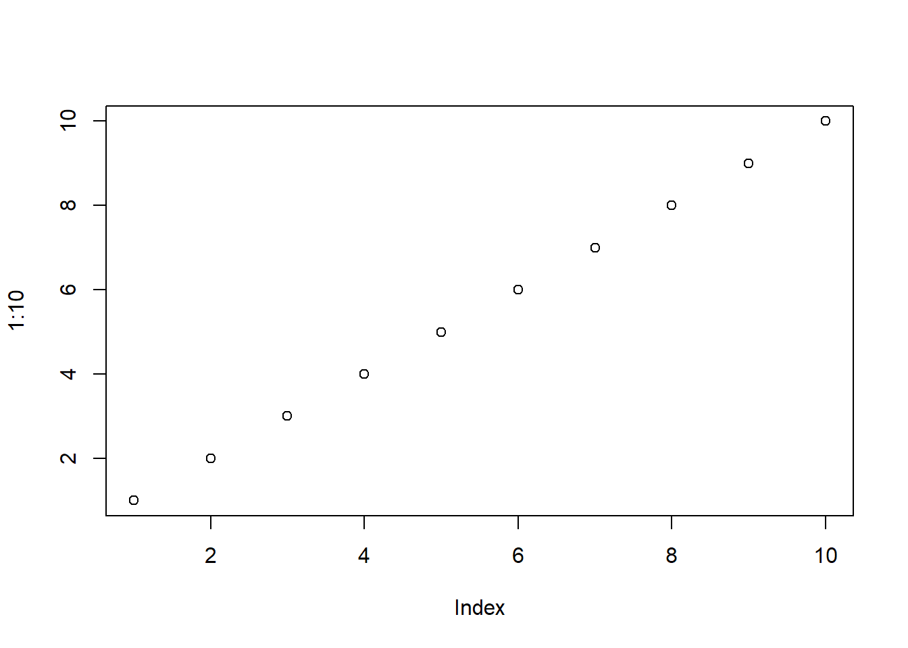
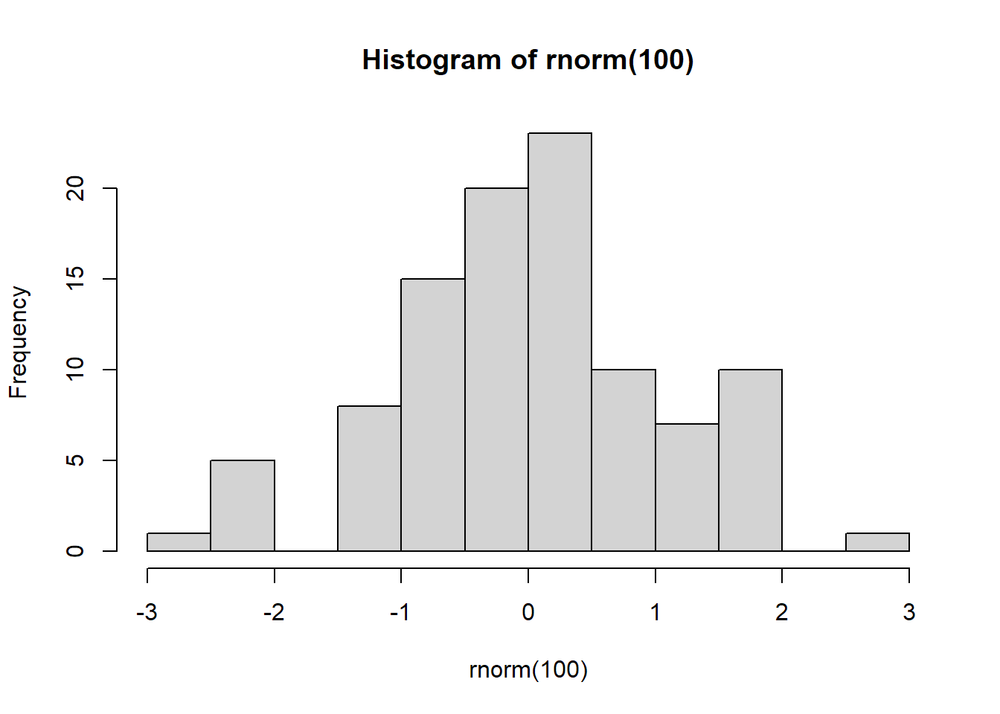
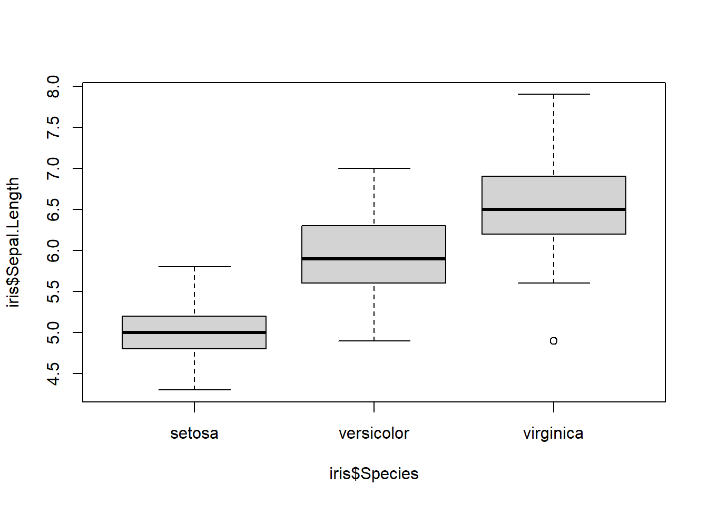

1 + 1[1] 22 * 5[1] 1010 / 2[1] 53 ^ 2 # Elevar al cuadrado[1] 9sqrt(16) # Raíz cuadrada[1] 4Analisis de datos I - Unidad 2
Este ejercicio práctico tiene como objetivo que te familiarices con la interfaz de RStudio. ¡Vamos a explorar juntos sus diferentes componentes!
La Consola es tu espacio interactivo en RStudio (panel inferior izquierdo). Aquí puedes escribir y ejecutar comandos de R directamente, uno a la vez. ¡Vamos a usarla como una calculadora!
Prueba estas operaciones directamente en la Consola y observa los resultados:
1 + 1[1] 22 * 5[1] 1010 / 2[1] 53 ^ 2 # Elevar al cuadrado[1] 9sqrt(16) # Raíz cuadrada[1] 4También podes probar operaciones un poco más complejas:
(20 + 10) * 3[1] 90log10(1000) # Logaritmo base 10[1] 3¡Experimenta con tus propias operaciones! ¿Qué otras funciones matemáticas conoces?
Ahora, vamos a “guardar nuestra receta” creando un script.
Andá a ‘Archivo’ -> ‘Nuevo Archivo’ -> ‘Script de R’ (Panel superior izquierdo). Se abrirá un nuevo panel: ¡el Editor de Scripts!
Escribí los siguientes comandos en tu script (Panel superior izquierdo, el nuevo archivo):
Asignando valores a variables (¡Ingredientes a la alacena!):
nombre_curso <- "Análisis de Datos 1"
anio <- 2025nombre_curso # Escribí 'nombre_curso' y presiona 'Ctrl + Enter' o 'Cmd + Enter' para ejecutar esta línea[1] "Análisis de Datos 1"print(nombre_curso) # Otra forma de imprimir[1] "Análisis de Datos 1"cat("Bienvenido/a al curso de", nombre_curso, "en el año", anio, "\n") # 'cat()' permite concatenar y mostrar textoBienvenido/a al curso de Análisis de Datos 1 en el año 2025 ¡Guardá tu script! Andá a ‘Archivo’ -> ‘Guardar Como…’ y nómbralo ‘Mi_primer_script.R’ (Elegí una carpeta donde guardar tus scripts, por ejemplo, una carpeta llamada ‘Scripts_R_Curso’)
Observa el panel ‘Environment’ (Panel superior derecho). Deberías ver las variables ‘nombre_curso’ y ‘anio’ que creaste.
El ‘Environment’ te muestra todos los objetos (variables, datos, funciones, etc.) que creaste y que R tiene “en memoria” en este momento.
Vamos a crear un gráfico simple y verlo en el panel ‘Plots’ (Panel inferior derecho, pestañas).
Ejecutá este código en tu script (o directamente en la consola):
plot(1:10) # Crea un gráfico de puntos con valores del 1 al 10 en el eje x e y por defecto
hist(rnorm(100)) # Crea un histograma de 100 valores aleatorios de una distribución normal
boxplot(iris$Sepal.Length ~ iris$Species) # Boxplots comparando 'Sepal.Length' por 'Species' del dataset 'iris'
Recorá que los ‘Proyectos’ de RStudio son como organizar tu cocina en carpetas y espacios de trabajo.
Para proyectos más grandes y organizados, ¡usar proyectos es muy recomendable!
Para crear un proyecto, ir a: ‘Archivo’ -> ‘Nuevo Proyecto…’
¡Felicidades! Diste tus primeros pasos explorando la interfaz de RStudio.